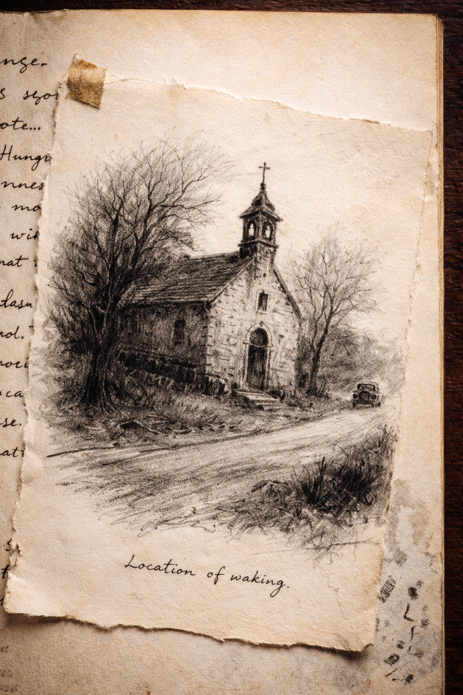

Entry II
The next entry begins on the following page.
The handwriting is the same, though the pressure of the ink appears firmer. The strokes seem more deliberate, as if written after movement had returned to the hand that held the pen.
You read the first sentence twice before continuing.
Awareness returns slowly.
Stone carries sound well.
For a time he remains still beneath the weight of the earth above him. The chapel still stands. He knows this from the bells.
They pass through the stone as they always have, low and measured. A familiar counting of time.
Then the bells are broken.
A harsh mechanical call cuts across the fields beyond the chapel yard. Loud. Abrupt. Without patience.
It sounds once, then again.
The bells continue as though nothing interrupted them.

Awareness returned beneath a rural chapel whose foundation I had used before.
The structure endured. That is satisfactory.
The world above has altered in tempo. Mechanical conveyances travel the roads with frequency sufficient to disturb the bells.
Population density appears increased. Settlement expands outward from older towns. Machinery is common enough to pass without remark.
The body required correction soon after rising. A labourer travelling alone along the road provided the necessary adjustment.
Observation followed.
Authority appears organised with greater discipline than in previous cycles. Movement between towns occurs with unusual speed.
War appears probable.
Conflict produces useful conditions. Records fracture. Attention divides. Disappearance becomes common.
Movement will resume.
You reach the end of the entry without noticing how still you have become.
The feeding is described in a single line.
What lingers is something else.
He woke into a world he did not recognise and treated it as a condition to be measured.
You glance again toward the shelves.
There are more volumes there than you first realised.